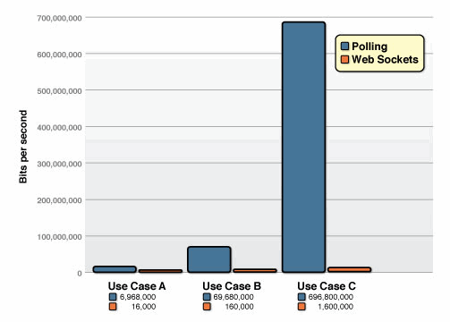

created by xyzko1
2019年08月13日 19:00:00
前言
最近因为项目中涉及到了实时数据的传输，特地去了解了一下当前Web应用中常见的实时交互手段，当然一开始也不仅限于Web客户端。从c#自带的Socket类，到Html5中的WebSocket，再到Asp .Net利器SignalR，总算将这块知识点及应用入门了，当然今天的主要内容还是Web端的消息交互技术(Ajax,Comet,WebSocket等)，这些技术难度有中有低，应用场所也有不同，最后我们要根据项目情况来选择恰当的技术。接下来便简单介绍一下
Web消息交互技术
常见技术
| 应用技术 | 说明 | 优缺点 |
|---|---|---|
| 轮询（polling） | 这应该是最常见的一种实现数据交互的方式，开发人员控制客户端以一定时间间隔中向服务器发送Ajax查询请求大，但是也因此，当服务器端内容并没有显著变化时，这种连接方式将带来很多无效的请求，造成服务器资源损耗。适合并发量小，实时性要求低的应用模型，更像是定时任务。 | 优点：实现最为简单，配置简单，出错几率小 缺点：每次都是一次完整的http请求，易延迟，有效请求命中率少，并发较大时，服务器资源损耗大 |
| 长轮询（long polling） | 长轮询是对轮询的改进，客户端通过请求连接到服务器，并保持一段时间的连接状态，直到消息更新或超时才返回Response并中止连接，可以有效减少无效请求的次数。属于Comet实现 | 优点：有效减少无效连接，实时性较高 缺点：客户端和服务器端保持连接造成资源浪费，服务器端信息更新频繁时，long polling并不比polling高效，并且当数据量很大时，会造成连续的polls不断产生，性能上反而更糟糕 |
| iframe流 | iframe流方式是在页面中插入一个隐藏的iframe，利用其src属性在服务器和客户端之间创建一条长链接，服务器向iframe传输数据（通常是HTML，内有负责插入信息的javascript），来实时更新页面。属于Comet实现 | 优点：实时性高，浏览器兼容度好 缺点：客户端和服务器端保持长连接造成资源浪费 |
| WebSocket | WebSocket是HTML5提供的一种在单个 TCP 连接上进行全双工通讯的协议，目前chrome、Firefox、Opera、Safari等主流版本均支持，Internet Explorer从10开始支持。另外因为WebSocket 提供浏览器一个原生的 socket实现，所以直接解決了 Comet 架构很容易出错的问题，而在整個架构的复杂度上也比传统的实现简单得多。 | 优点：服务器与客户端之间交换的数据包档头很小，节约带宽。全双工通信，服务器可以主动传送数据给客户端。 缺点：旧版浏览器不支持 |
Tips：浏览器和客户端之间想要进行WebSocket通信的话，从一开始的握手阶段，就要从HTTP协议升级为WebSocket协议，这是服务器根据WebSocket发送的请求包决定的。关于WebSocket的具体介绍（规范和语法和状态转换）可以参考使用 HTML5 WebSocket 构建实时 Web 应用.
WebSocket介绍
WebSocket本质上是一个基于TCP的持久化协议，相对于HTTP这种非持久的协议来说，它能够更好的节省服务器资源和带宽，并且真正实现实时通信。以下是它与传统技术的性能对比图（Websocket.org提供）

我们可以看到相比于传统技术，在流量和负载逐渐增大时，WebSocket的性能表现是远远超过它们的。
上文提到WebSocket在实际运用时是在握手阶段从http请求升级上来的，让我们来看一个Websocket请求的例子——这里借用下维基百科的内容
客户端到服务器端
GET / HTTP/1.1
Upgrade: websocket
Connection: Upgrade
Host: example.com
Origin: null
Sec-WebSocket-Key: sN9cRrP/n9NdMgdcy2VJFQ==
Sec-WebSocket-Version: 13
服务器端到客户端
HTTP/1.1 101 Switching Protocols
Upgrade: websocket
Connection: Upgrade
Sec-WebSocket-Accept: fFBooB7FAkLlXgRSz0BT3v4hq5s=
Sec-WebSocket-Origin: null
Sec-WebSocket-Location: ws://example.com/
注意“1.”中的UpGrade:websocket和Connection: Upgrade这两个核心属性表示本次是一个特殊的http请求，目的就是要将浏览器端和服务器端的通讯协议从HTTP协议—升级—>WebSocket协议，其他属性都是客户端向服务器端提供的握手信息。
Sec-WebSocket-Version: 13代表这是13版修订协议，Sec-WebSocket-Key是随机生成的，服务器端会把Sec-WebSocket-Key加上一个魔幻字符串“258EAFA5-E914-47DA-95CA-C5AB0DC85B11”。使用SHA-1加密，之后进行BASE-64编码，将结果做为Sec-WebSocket-Accept头的值，返回给客户端，表明服务器端同意创建Websocket请求。
WebSocket示例
以下用控制台和WebSocket简单实现下服务器和客户端的全双工通信，其中后台使用了SuperWebSocket技术
后台示例代码：
1 | using System; |
前台示例代码，通过websocket的api我们可以很容易实现主要逻辑
1 |
|
最终结果如下图：

关于Web实时技术和WebSocket的介绍便到这里了，我们甚至可以用c#自己实现一个WebSocket的服务器，详情请看《如何编写一个WebSocket服务器》以及用c#实现的一个简单的WebSocket服务器《C# socket编程实践》，当然还是推荐SuperWebSocket。当然这篇只是简单的介绍而已，我自己的WebSocket实现（结合规范实现）也会在之后的博客中贴出。
假如还写得动……
至此，数种常见的Web实时交互技术已经总览一遍了，对于Asp Web开发者来说，.Net平台为我们提供了一种简洁高效智能的实时信息交互技术——SignalR，它集成了上述数种技术，并能根据配置自动或者手动选择最佳应用。
Signal
SignalR是什么
SignalR是一个.Net开源库，用于构建需要实时进行用户交互和数据更新的Web应用，如在线聊天，游戏，天气或者股票信息更新等实时应用程序。SignalR简化了构建实时应用的过程，它包括了一个Asp .Net服务器端库和一个Js端库，集成了数种常见的消息传输方式，如long polling，WebSocket，并提供相应的Api供开发人员选择如何调用，帮助其可以简单快速地实现客户端与服务器端相互间的实时通信。
当环境条件合适时，SignalR将WebSocket作为底层传输方式的优先实现，当然，它也能很高效地回退到其他技术。同时，SignalR提供了非常良好的Api以供远程调用(RPC) 浏览器中的js代码。
接下来，看看SignalR的传输方式和通信模型，这是SignalR的核心所在。
SignalR基本适用于任何可以用上述技术实现的场合，但是对寄宿平台版本有要求。如.Net Framework 平台，SignalR库需要4.5及以上版本的支持，而Mono上也实现了SignalR。如果是最新的.Net Core 1.0，建议大家直接使用SelfHost方式寄宿。
默认传输方式
| 传输方式 | 选择条件 |
|---|---|
| long polling | 1.IE8或更早版本 2.连接启动时JSONP参数设置为TRUE 3.Forever Frame不可用 |
| WebSocket | 1.正在使用跨域连接，并且符合以下条件（以下不满足任一条则使用长轮询） （1）.客户端支持CORS （2）.客户端支持WebSocket （3）.服务器端支持WebSocket 2.不配置使用JSONP，连接不跨域并且客户端和服务器端都支持WebSocket （1）.客户端支持CORS （2）.客户端支持WebSocket （3）.服务器端支持WebSocket |
| ServerSendEvent | 客户端或服务器端不支持Websocket |
| Forever Frame | EventSource不可用（基本上除了IE外都支持） |
指定传输方式
如果开发人员想要让客户端按照特定的方式和顺序进行数据传输，可以通过使用$.connection.start({transport:[‘webSockets’,‘foeverFrame’,……]})，当客户端和服务器端并不支持指定方式时，程序将按照默认规则匹配传输方式。
用于指定传输方式的字符串常量定义如下：
webSockets
foeverFrame
serverSentEvents
longPolling
自动管理传输方式
不指定传输方式时，SignalR会以Http方式发起请求，比对客户端和服务器端后，假如WebSocket可用，则自动升级到WebSocket模式，WebSocket是最理想的传输方式，除了能高效使用服务器内存，低延迟，还能实现客户端和服务器端的全双工通信。开发人员可以通过SignalR中js库的$.connection.chatHub.logging = true;来启用hub事件的日志记录
通信模型
SignalR包括两种客户端和服务器端之间进行通信的模型，Persistent Connections和Hubs。
| 通信模型 | 说明 |
|---|---|
| Persistent Connections | Persistent Connections表示一个发送单个，编组，广播信息的简单终结点。开发人员通过使用持久性连接Api，直接访问SignalR公开的底层通信协议。 |
| Hubs | Hubs是基于连接Api的更高级别的通信管道，它允许客户端和服务器上彼此直接调用方法，SignalR能够很神奇地处理跨机器的调度，使得客户端和服务器端能够轻松调用在对方端上的方法。使用Hub还允许开发人员将强类型的参数传递给方法并且绑定模型 |
SignalR示例（永久连接和Hubs(略)）
Hubs的示例网上已经很多了（文章末尾附上链接），这边先来快速开始一个SignalR使用永久连接的Demo.
关于永久连接和Hubs的区别，这里有些很棒的解释.
安装Nuget包
创建一个默认的Asp .Net Mvc项目
使用Install-Package Microsoft.AspNet.SignalR安装SignalR包
增加SignalR服务
新增Connections文件夹，添加SignalR永久连接类ChatConnections
1 | using System.Threading.Tasks; |
增加Startup启动类
1 | using Microsoft.Owin; |
前端js配置
前端js实现消息广播，并实时记录
1 | @{ |
实际效果
.Net Client实现
除了Web实时应用之外，你也可以用其他应用程序实现实时交互，如控制台。只需要Install-Package Microsoft.AspNet.SignalR.Client命令，示例编码如下
1 | using Microsoft.AspNet.SignalR.Client; |
效果如图,同样实现了双向通信
总结
至此，常见的Web实时交互技术和SignalR简单介绍就告一段落了，具体的进阶使用我可能会在后续博文贴出，如Hubs通信模型解析，分组连接信息传输等，不过建议大家直接去阅读SignalR官方文档，查阅相关的Api就可以了，我相信普通技术的运用相对于理解还是要方便的。
这里额外推荐一篇SignalR的深入解读【打破砂鍋系列】SignalR傳輸方式剖析,这个博主也深入介绍了SignalR的自动选择和传输机制，也是一篇很棒的文章。
Please Star this Project if you like it! Follow would also be appreciated!
Peace!